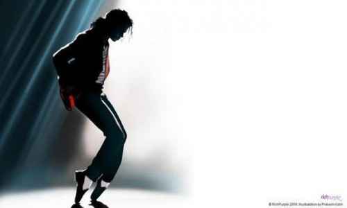

Michael Jackson
The King of Pop

The legend performing his signature move-"The Moonwalk"
- 1958- Born in Gary,Indiana near Chicago.
- 1964- Michael joined the Jackson Brothers—a band formed by his father which included his sibilings as backup musicians.
- 1965- The band's name was changed to Jackson 5.
- 1970- "I Want You Back" became the first song to reach number one on the US Billboard Hot 100.
- 1972-1975- Michael released four solo studio albums with "Motown: Got to Be There" (1972), "Ben" (1972), "Music & Me" (1973), and "Forever, Michael" (1975). "Got to Be There" and "Ben", the title tracks from his first two solo albums, sold well as singles, as did a cover of Bobby Day's "Rockin' Robin".
- 1981- Michael released his fifth album "Off The Wall"
- 1982- Michael released his sixth album "Thriller".
- 1984- Won Grammy Award for Album of the Year(Thriller)
- 1991- Released his eigth album "Dangerous".
- 1995- Michael released the double album "HIStory:Past,Present and Future, Book I".
- 1996-1997- Promoted HIStory with the HIStory World Tour and performed 82 concerts in five continents,25 countried and 58 cities to over 4.5 million fans. That was his most attended tour.
- 2002- Jackson won his 22nd American Music Award for Artist of the Century.
- 2009- Dies due to cardiac arrest.
Here's the timeline of Michael Jackson's life
If you wanna make the world a better place, take a look at yourself, then make that change.
-Michael JacksonIf you have some time on your hands and would love to read more about this outstanding human being, then you can check out his Wikipedia entry